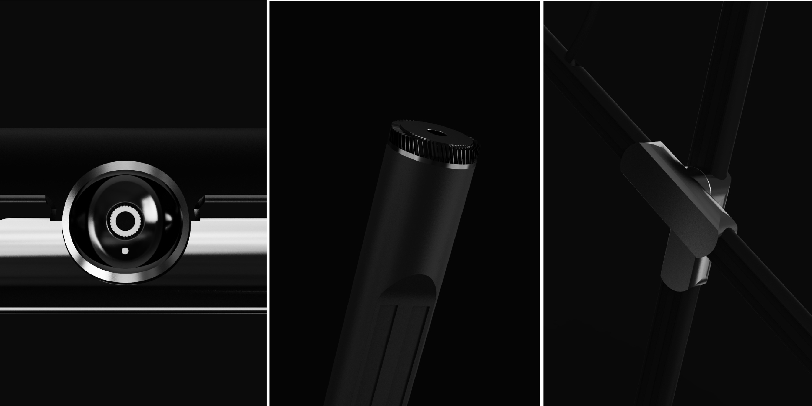
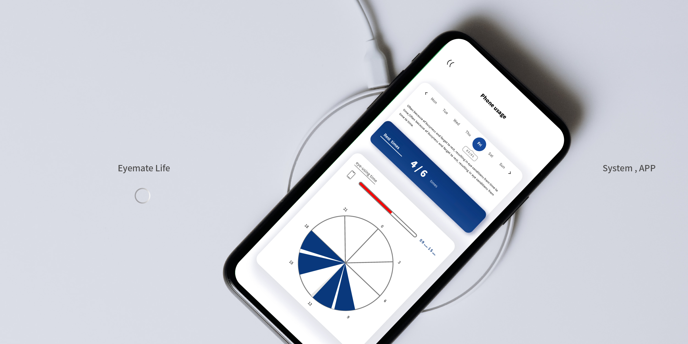
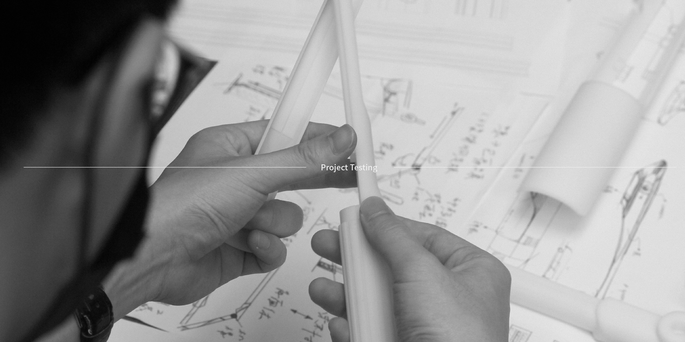
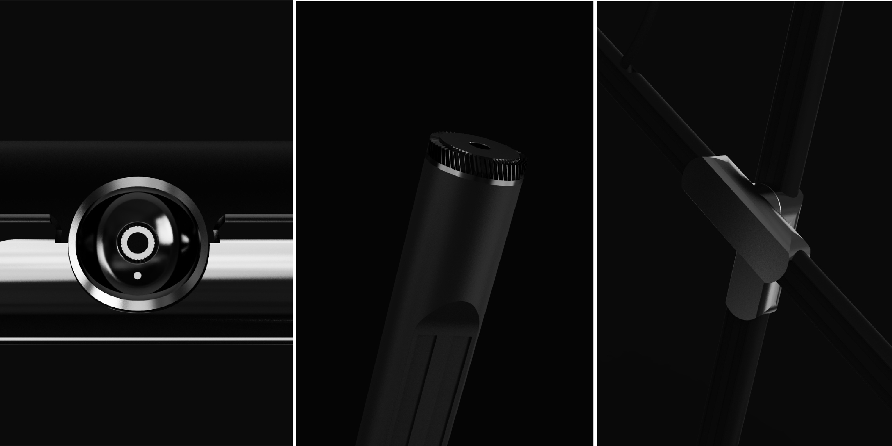
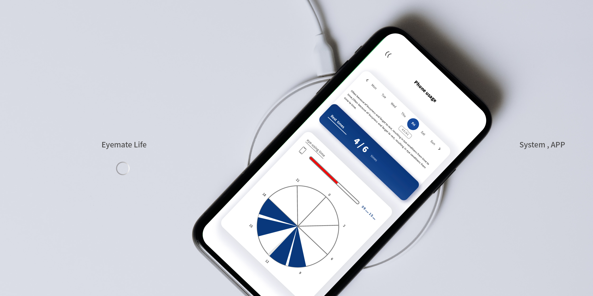
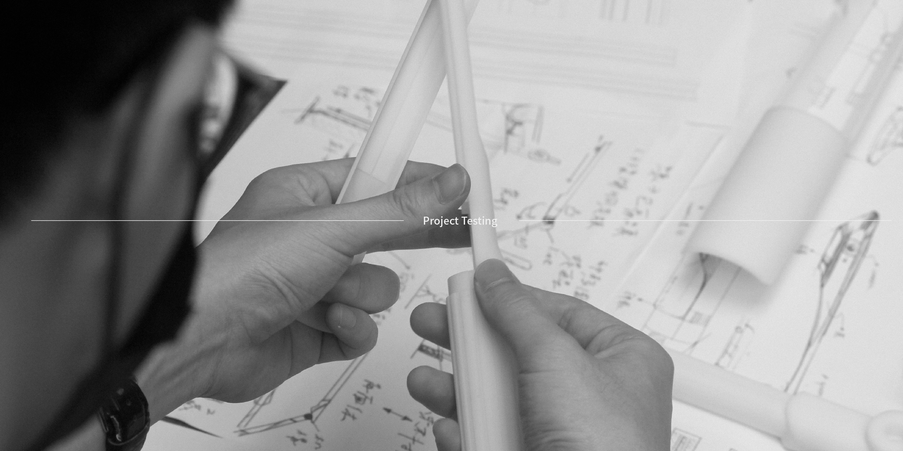

EYEMATE is a systematic product combining office desk lamp and eye-tracking techniques, providing a better solution for monitoring eye conditions and improving habits for bad eye health. With users’ eye-using time and eyes closed and eyes open conditions collected by the eye-tracking technique, EYEMATE is able to have a good understanding of users’ eyes conditions and physiological status immediately, so as to have an analysis of rest hours and fatigue level. Then, EYEMATE converts the analysis result into varied brightness and reminders features to remind users to switch between work and rest.
Electroplated Metal, Plastic, Facial Recognition, LEDlight, Light Sensing Technology, Eye Tracking
H672 × W122 × D603 mm
| TYPE | Product Design | ||||
| DEPARTMENT | Industrial Design | ||||
| +DESIGNER(S) | Zhu, Shu-Yi & Yang, Kai-Wen |
| Zhu, Shu-Yi | I am Zhu Shu-Yi, a junior at National Taiwan University of Science and Technology, with a major in Industrial design and a minor in Intellectual Property. In the cooperation projects with others, I am good at drawing up plans
to ensure the progress and completeness of the work.In the field of design, I specialize in the product application of CMF, styling design and research technology. Focusing on product innovation and technical integration,
and meeting market demand and the feasibility of implementation.In addition,I have participated in many design competitions and have design experience in different aspects.
CONTACTasd2208672@gmail.comBehance: 朱 書逸 |
| Yang, Kai-Wen | Yang Kai-Wen, majoring in the National University of Science and Technology of Industrial Design, I have studied product design, social design, interface design,graphic design and photography related fields. In 2020, worked
as a summer design intern at Ndd Design, in 2021, worked as a summer design intern at Agua Design, and also worked as teaching assistants during the studies, I look forward to gaining more experience in the field of industrial
design in the future, and I also plan to study the field of design management.
CONTACTkaiwenyang708@gmail.comBehance: Kai-wen Yang |
| ADVISOR(S) | Lin, Ming-Huang & Liu, Jia-Sheng & Li, Jian-You |